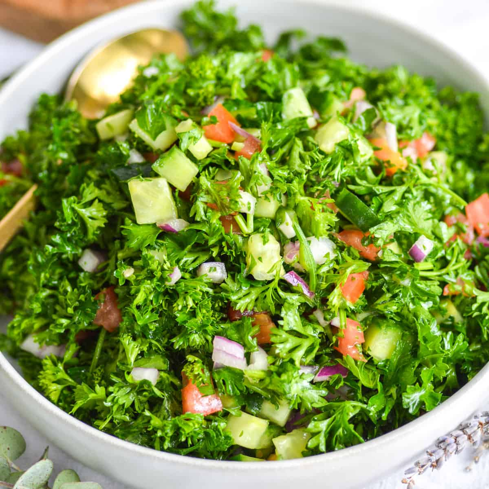
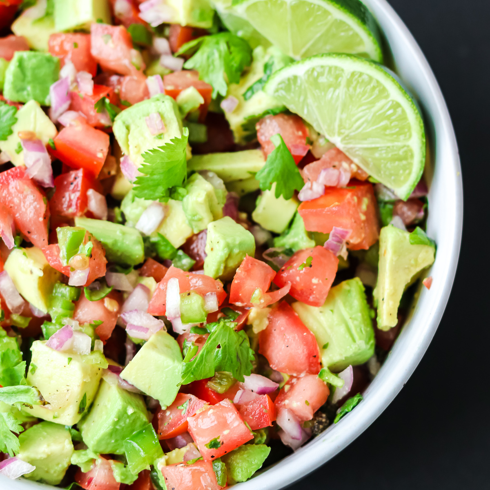

Pico De Tabbouleh Recipe


This recipe is a mash-up of the lebanese dish tabbouleh with a touch of pico de gallo.
I created this recipe for my love of both dishes bringing the characteristics I like most to one recipe.
Ingredients
- Parsley
- Plum Tomatoes
- Cucumber
- Avocado
- Olive Oil
- Jalapenos
- Salt
- Pepper
- Lemon Juice
Steps
- Dice the vegetables into cubes of your desired size
- chop parsely into a smaller size using both leaves and stem
- Squeeze one lemons worth of lemon juice
- Season with salt, pepper, and olive oil and enjoy